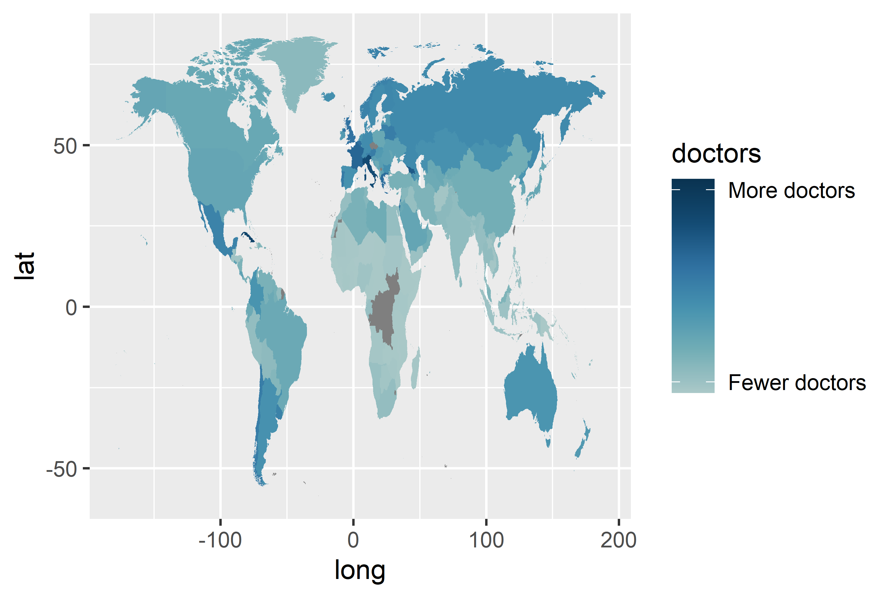
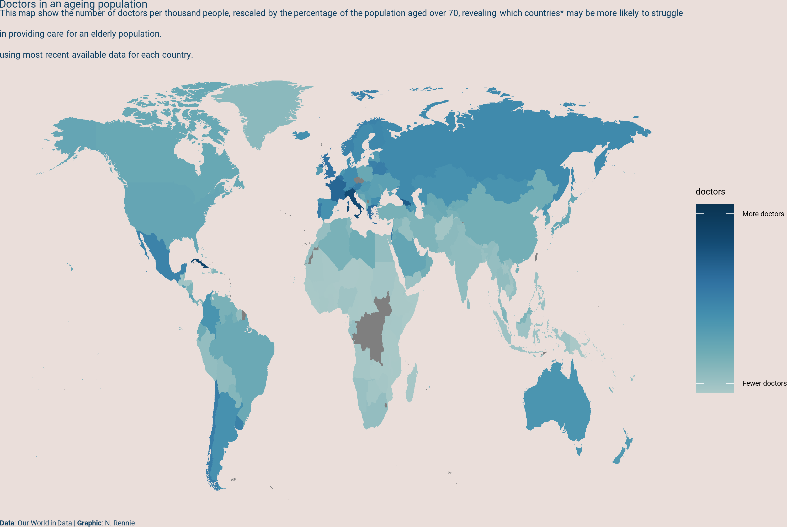
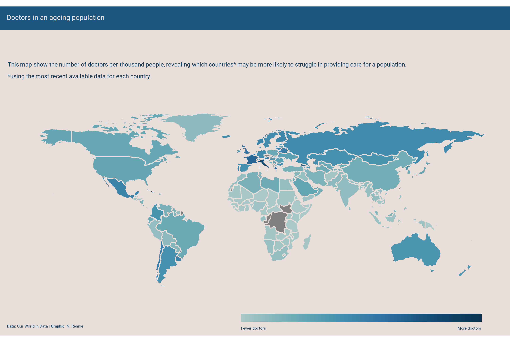
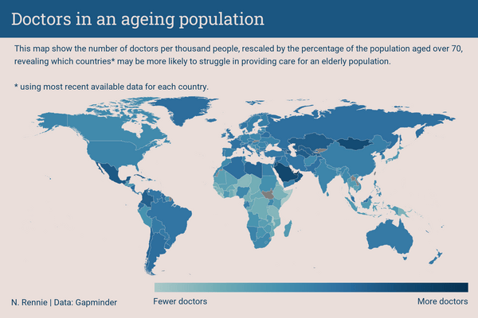

doctors <- readr::read_csv("data/doctors.csv")3 Doctors in an ageing population: making maps with {ggplot2}
In this chapter… we’ll learn how to idenifty open data sources, make maps with ggplot2 using maps package, and create …. with a … to facets.
3.1 Data
- Bring your own data
- Common data sources
- Doctors data
The … comes from Our World in Data (Data 2019)
3.2 Exploratory work
3.2.1 Data exploration
what does data look like
3.2.2 Exploratory sketches
3.3 Preparing a plot
3.3.1 Data wrangling
Retrieving map data with {ggplot2}
[1] 252[1] 221Note that recode has the rather unusual syntax of old_name = new_name
plot_data <- doctors |>
dplyr::mutate(
region =
dplyr::recode(region,
"United Kingdom" = "UK",
"United States" = "USA",
"Congo, Dem. Rep." = "Democratic Republic of the Congo",
"Cote d'Ivoire" = "Ivory Coast",
"Congo, Rep." = "Republic of Congo"
)
)
map_data <- dplyr::left_join(world, plot_data, by = "region") |>
dplyr::filter(region != "Antarctica")3.3.2 The first plot
3.4 Advanced styling
3.4.1 Colors
library(MetBrewer)
col_palette <- met.brewer("Hokusai2", n = 20)
text_col <- col_palette[18]
highlight_col <- col_palette[15]
bg_col <- "#EADEDA"col_plot <- base_plot +
scale_fill_gradientn(
colors = col_palette,
limits = c(0, 10),
breaks = c(0.5, 9.5),
labels = c("Fewer doctors", "More doctors")
) +
guides(fill = guide_colorbar(ticks = FALSE))
col_plot

3.4.2 Text and fonts
{sysfonts} {showtext}
sysfonts::font_add_google(name = "Roboto", family = "roboto")
showtext::showtext_auto()
showtext::showtext_opts(dpi = 300)
body_font <- "roboto"title <- "Doctors in an ageing population"
st <- "This map show the number of doctors per thousand people, rescaled by the percentage of the population aged over 70, revealing which countries* may be more likely to struggle in providing care for an elderly population.<br> using most recent available data for each country."
cap <- "**Data**: Our World in Data | **Graphic**: N. Rennie"text_plot <- col_plot +
labs(
title = title, subtitle = st, caption = cap
)3.4.3 Adjusting themes
library(ggtext)
text_plot +
theme_void(base_size = 8, base_family = body_font) +
theme(
plot.background = element_rect(fill = bg_col, color = bg_col),
panel.background = element_rect(fill = bg_col, color = bg_col),
plot.title = element_textbox_simple(
color = text_col
),
plot.subtitle = element_textbox_simple(
color = text_col
),
plot.caption = element_textbox_simple(
hjust = 0,
color = text_col
))

Box for title facets
map_data$label <- titleWhile we’re here, let’s lines of map same color as bg and a little bit thinner
styled_plot <- ggplot(
data = map_data,
mapping = aes(
long,
lat,
map_id = region,
fill = doctors
)
) +
geom_map(
map = map_data,
color = bg_col,
linewidth = 0.5
) +
scale_fill_gradientn(
colors = col_palette,
limits = c(0, 10),
breaks = c(0.5, 9.5),
labels = c("Fewer doctors", "More doctors")
) +
guides(fill = guide_colorbar(ticks = FALSE)) +
labs(
title = title, subtitle = st, caption = cap
) +
facet_wrap(~label) +
theme_void(base_size = 8, base_family = body_font) +
theme(
plot.background = element_rect(
fill = bg_col, color = bg_col),
panel.background = element_rect(
fill = bg_col, color = bg_col),
plot.title = element_textbox_simple(
color = text_col,
lineheight = 0.5
),
plot.subtitle = element_textbox_simple(
color = text_col,
lineheight = 0.5
),
plot.caption = element_textbox_simple(
hjust = 0,
color = text_col,
lineheight = 0.5
),
strip.background = element_rect(
fill = highlight_col, color = highlight_col))
styled_plot
move subtitle text Note legend.position.inside used to be legend.position before ggplot2 3.5.0
styled_plot +
labs(
subtitle = NULL, tag = st
) +
theme(
# move and format the tag (subtitle) text
plot.tag.position = c(0.03, 0.78),
plot.tag = element_textbox_simple(
color = text_col,
lineheight = 0.5,
hjust = 0
),
# change title text color
plot.title = element_textbox_simple(
color = bg_col,
lineheight = 0.5
),
# style the legend
legend.text = element_text(
color = text_col,
lineheight = 0.5,
hjust = 0.5
),
legend.key.width = unit(2, "cm"),
legend.key.height = unit(0.3, "cm"),
legend.position.inside = c(0.645, -0.005),
legend.title = element_blank(),
legend.direction = "horizontal",
plot.margin = margin(0, 0, 10, 0)
)

3.5 Reflection
Note: ℹ The package “mapproj” is required for
coord_map(). ✖ Would you like to install it?
1: Yes 2: No
fewer/more labels
see the making of . If you’d like to read more about {camcorder} - see chapter … .
